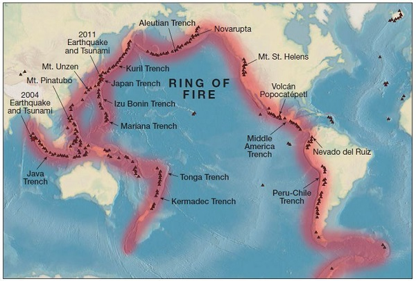
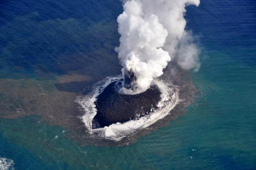

The Ring of Fire
The world's most active volcanoes lie along what's called the Ring of Fire.
It's also where most earthquakes happen as tectonic plates push against each other, causing tremors.
The "ring" stretches along a 25,000-mile (40,000-kilometer) arc from the boundary of the Pacific Plate, to smaller plates such as the Philippine Sea plate, to the Cocos and Nazca Plates that line the edge of the Pacific Ocean.
People most at risk from volcanic eruptions and earthquakes live in countries that lie along the Ring of Fire, including Chile, Japan, the US west coast, and other island nations including the Solomon Islands to the western seaboard of North and South Americas.
How Ring of fire Formed.
Tectonic plates are massive slabs of the Earth's crust. These move constantly above the mantle -- a layer of solid and molten rock below the Earth's crust.
The Ring of Fire was formed as oceanic plates slid under continental plates.
Volcanoes along the Ring of Fire are formed when one plate is shoved under another into the mantle -- a solid body of rock between the Earth's crust and the molten iron core -- through a process called subduction.
Large earthquakes -- which risk triggering tsunamis -- also occur in subduction zones.
Active Volcanoes in the Ring of Fire
Mount Ruapehu is part of the Taupo Volcanic Arc, where the dense Pacific Plate is subducting beneath the Australian Plate. Krakatau, perhaps better known as Krakatoa, is an island volcano in Indonesia. Krakatoa erupts less often than Mount Ruapehu, but much more spectacularly.
The Ring of Fire contains approximately 850–1,000 volcanoes that have been active during the last 11,700 years (about two-thirds of the world's total).